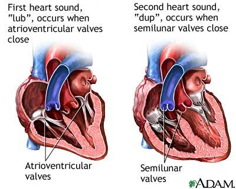

SIRDS | Medicīnas termins
- Domatajs.lv
Katrai sirds pusei ir savs priekškambarisun kambaris. Tātad sirdij ir 4 dobumi: 2 priekškambaripie pamatnes un 2 kambari —tuvākgalotnei. Sirds labajāpriekškambarīpa augšējoun apakšējodobo vēnu ieplūstvenozas asinis no lielāasinsrites loka. Sirds kreisajāpriekškambarīpa plaušu vēnām - arteriālasasinis - Atšķirības starp labās un kreisās puses sirds mazspēju | 2019
Sirds garums ir 12—13 cm, platums 9—10,5 cm, biezums 7—8 cm, tās masa vīriešiem vidēji 300 g, bet sievietēm apm. 250 g. Nepārtraukta starpsiena sirdi sadala 2 daļās — labajā un kreisajā. Pa labo plūst venozas, pa kreiso — arteriālas asinis. Katrai sirds pusei ir savs priekškambaris un kambaris. - SIRDS | Medicīnas termins
Sirds uzbūve 1.Sirds ir muskuļu orgāns mugurkaulniekiem, atbildīgs par asins cirkulāciju organismā. Sirds periodiski saraujas un izplešas. Sirds forma atgādina bumbieri. 2.Grieķiski sirds ir cardia, no kura ir arī atvasināti dažādi termini, kas saistīts ar sirdi, piemēram, kardioloģija. 3.Katrai sirds pusei ir priekškambaris un kambaris. Priekškambari ir mazāki nekā kambari ... - Jūlija mēneša horoskops katrai zodiaka zīmei - 1188 Padomi
Pasaules Hipertensijas diena. Kā liecina Pasaules Veselības organizācijas dati, šobrīd pasaulē izplatītākā sirds un asinsvadu slimība – hipertensija jeb paaugstināts asinsspiediens – skar aptuveni 1 miljardu iedzīvotāju, un paredzams, ka līdz 2025. gadam tās izplatība palielināsies par 50% sasniedzot 1,5 miljardus iedzīvotāju. - Vai jāapspriež Valsts prezidenta sirdskaite? (+Infografika ...
Sirds forma atgādina sažņaugtu dūru. Pieaugušai sievietei tās svars ir 255 grami, bet vīrietim – 310 grami. Sirds ar starpsienu tiek sadalīta divās daļās: kreisajā pusē un labajā pusē. Savukārt, katrai sirds pusei izšķir augšējo daļu jeb priekškambari un apakšējo daļu jeb kambari. Tātad cilvēka sirdij ir 4 dobumi: - Sirds uzbūve / Konspekts / ID: 536676
Katrai sirds pusei ir sava funkcija, un, aprakstot tos šeit sīkāk, jūs sapratīsit, ka mūsu sirds darbībai ir vairāk nekā tikai asiņu pumpēšana un iemīlēšanās. Kā tas darbojas, sirds labā puse saņems asinis no ķermeņa, īpaši no plaušām. Tas īslaicīgi turētu skābekļa deficīta asinis. - Par sirdi vīrusa laikā - Harmonijā - Egoiste - TVNET
Katrai sirds pusei ir divas kameras - priekškambaris un kambaris. Sirdi veido sirds muskulis - miokards. Sirds kreisajā pusē muskulis ir biezāks kā labajā, jo sirds kreisajai pusei ir jāveic lielāks darbs kā labajai - jādzen asinis pa lielo asinsrites loku. - Slimības simptomu un cēloņu sirds mazspējas veidi
Sirds garums 12 — 13 cm, platums 9 — 10,5 cm, biezums 7 — 8 cm, tās masa vīriešiem vidēji 300 grami, bet sievietēm apmēram 250 grami. Nepārtraukta starpsiena sirdi sadala 2 daļās — labajā un kreisajā. Pa labo plūst venozas, pa kreiso — arteriālas asinis. Katrai sirds pusei ir savs priekškambaris un kambaris. - asinsrite – Zoro.lv
Cilvēka sirds ir dobjš muskuļots dūres lieluma orgāns, kas darbojas kā sūknis. Mūsu sirds virza asinis pa visu organismu. Sirdi divās pusēs – labajā un kreisajā – sadala starpsiena. Katrai sirds pusei ir divas kameras – priekškambaris un kambaris. Sirds priekškambari un kambari saraujas un atslābst aptuveni ik pēc 0,8 sekundēm, nodrošinot nepārtrauktu asiņu plūsmu […] - SIRDS : Latvijas veselības portāls | medicīnas uzņēmumi ...
Laikā, kad apkārt kā neredzams drauds izplatās COVID-19 vīruss, papildus profilakses pasākumi un uzmanība sirds veselībai var nākt tikai par labu. VCA „Aura” dienas stacionāra vadītāja interniste Inga Orleāne skaidro : “Hroniskiem sirds slimību pacientiem ar noteiktām sirds un asinsvadu slimībām ir lielāks risks iegūt smagākas komplikācijas, slimojot ar vīrusa ...

Neslimo.lv
Sākums Medicīnas termini Medicīnas iestādes Ārstniecības personas Par NESLIMO.LV Medicīnas enciklopēdija Medicīnas termini Saīsinājumi Biežāk skatītais Biežāk meklētais Komentētie raksti Anekdotes Par enciklopēdiju Datu avoti Medicīnas iestādes Iestāžu saraksts Iestāžu kategorijas Iestāžu datu avots Ģimenes ārsti Ārstniecības personas Personu saraksts Datu avots Sākums Medicīnas termini S Sirds Termins Attēli KomentāriSIRDS
Latīņu val.: corAvots
Populārā medicīnas enciklopēdija, 1984. gads. 1 anekdote asinsrites sistēmas centrālais orgāns, kas dzen asinis pa lielo un mazo asinsrites loku. SIRDS atrodas krūškurvī virs diafragmas , 2/3 pa kreisi, bet 1/3 pa labi no ķermeņa viduslīnijas.SIRDS ir konusa forma. Tās pamatne vērsta uz augšu un mugurpusi. SIRDS galotne vērsta uz priekšpusi un uz leju. SIRDS priekšējā virsma atrodas aiz krūšu kaula un ribām, apakšējā virsma pieguļ diafragmai , bet mugurējā vērsta pret mugurkaulu un barības vadu . No sāniem sirdij pieguļ plaušas .
SIRDS garums 12—13 cm, platums 9—10,5 cm, biezums 7—8 cm, tās masa vīriešiem vidēji 300 g, bet sievietēm apm. 250 g.
Nepārtraukta starpsiena SIRDS sadala 2 daļās — labajā un kreisajā. Pa labo plūst venozas, pa kreiso — arteriālas asinis . Katrai SIRDS pusei ir savs priekškambaris un kambaris. Tādējādi SIRDS ir 4 dobumi: 2 priekškambari pie pamatnes un 2 kambari — tuvāk galotnei. Starpsienā starp abiem priekškambariem embrionālajā periodā ir ovāla atvere, kas pēc dzimšanas aizaug, pārvērzdamās ovālajā bedrītē. Dažreiz tā neaizaug; tad jaundzimušajam venozās asinis sajaucas ar arteriālajām asinīm un no kreisā priekškambara caur kreiso kambari nonāk lielajā asinsrites lokā. Šo defektu novērš ar operāciju.
SIRDS labajā priekškambarī pa augšējo un apakšējo dobo vēnu ieplūst venozas asinis no lielā asinsrites loka, bet kreisajā priekškambarī pa plaušu vēnām arteriālas asinis no plaušām . Priekškambaru tilpumu palielina austiņas to priekšējās virsmas.
Katru priekškambari ar attiecīgo kambari savieno atvere, pa ko asinis nokļūst kambarī. Pie atveres labajā kambarī atrodas trīsviru vārstulis, bet kreisajā — divviru vārstulis.
Vārstuļi sastāv no trīsstūrainām virām. To pamatnes pieaug pie atveres malām, bet no abām pārējām viru malām iet cīpslainās stīgas uz papillārajiem (konusveida) muskuļiem . No labā kambara, tam saraujoties, asinis pa plaušu stumbra atveri nonāk plaušu stumbrā, bet no kreisā kambara — pa aortas atveri aortā . Abām šīm atverēm ir vārstuļi, kas sastāv no 3 pusmēnessveida kabatām. Kambariem saraujoties, šie vārstuļi atveras, bet atslābstot aizveras un neļauj asinīm plūst atpakaļ sirdī . Ja kāds patol. process bojā SIRDS vārstuļus, asinis nevar normāli plūst cauri SIRDS un rodas smagi traucējumi visā asinsrites sistēmā .
SIRDS sienai ir 3 kārtas: iekšējā — endokards, vidējā — miokards, ārējā — epikards.
Endokards izklāj visus SIRDS dobumus no iekšpuses un pārklāj papillāros muskuļus un cīpslainās stīgas.
Miokardu (muskuļkārtu) veido SIRDS šķērssvītru muskulatūra . Tā biezums visās SIRDS daļās nav vienāds. Visbiezākā muskuļkārta ir kreisajā kambarī (10—15 mm), jo tas veic vislielāko darbu — dzen asinis pa lielo asinsrites loku. Divreiz plānāka tā ir labajā kambarī (5—8 mm), kas dzen asinis tikai pa mazo asinsrites loku. Priekškambaros, no kuriem asinis plūst tikai uz kambariem, miokarda biezums ir 2—3 mm.
Epikards sedz SIRDS ārējo virsmu un vienlaikus ir SIRDS somiņas viscerālā lapa. Pati SIRDS somiņa veido noslēgtu maisu ap SIRDS . Tai ir 2 kārtas — ārējā, kas saaug ar apkārtējiem orgāniem ( pleiru , diafragmu ). un iekšējā, kas sadalās parietālajā un viscerālajā lapā. Parietālā lapa saaug ar somiņas ārējo kārtu, bet viscerālā lapa veido epikardu. Starp abām lapām atrodas neliels spraugveida dobums ar serozu šķidrumu, kas novērš berzi starp SIRDS virsmu un somiņu.
Sirdi inervē veģetatīvā nervu sistēma . Parasimpātiskās šķiedras uz SIRDS atzarojas no klejotājnerva; to impulsi pavājina un palēnina SIRDS saraušanos. Simpātiskās šķiedras uz SIRDS iet no simpātiskajiem stumbriem, un to impulsi pastiprina un paātrina sirdsdarbību .
SIRDS piemīt automātisms, kas saistīts ar īpašu atipisku muskuļ šūnu veidojumiem ( SIRDS vadīšanas sistēma). Šīs šūnas saglabājušas embrionālās attīstības stadijas iezīmes. Tajās maz miofibrillu, bet daudz sarkoplazmas. Šādu muskuļ šūnu veidojumi ir
1) sinusa un priekškambara (sinuatriālais) mezgls labā priekškambara sienā;
2) priekškambara un kambara (atrioventrikulārais) mezgls priekškambaru starpsienā un
3) priekškambaru un kambaru (atrioventrikulārais) kūlītis, kas pāriet kambaru starpsienā un sadalās 2 kājiņās . Šīs kājiņas zarodamās nonāk līdz papillārajiem muskuļiem .
Sinusa un priekškambara mezgls ir vadošā daļa, kas dod ritmiskus impulsus, izraisot SIRDS automātisku saraušanos. Ierosa no sinusa un priekškambara mezgla izplatās pa abiem priekškambariem, un tie kontrahējas. Visi specifiskās muskulatūras veidojumi nevada ierosu vienlīdz ātri; vislēnāk tā izplatās priekškambaru un kambaru mezglā, tāpēc priekškambari spēj sarauties, pirms sākas kambaru saraušanās (sistole).
Ja impulsu pārvade no priekškambariem uz kambariem ir traucēta, rodas SIRDS blokāde, kad priekškambari un kambari darbojas katrs savā ritmā — kambari retāk nekā priekškambari, jo priekškambaru un kambaru kūlīša šūnām ir vājāks automātisms un tās rada zemākas frekvences impulsus.
Attēls. Sirds , sirds vārstuļu un lielo asinsvadu projekcija uz krūškurvja priekšējās virsmas. 1 — vairogskrimslis; 2 — kreisā kopējā miegartērija; 3 — kreisā iekšējā jūga vēna ; 4 — vairogdziedzeris ; 5 — atslēgkauls; 6 — kreisā zematslēgkaula artērija; 7 — aortas loks; 8 — plaušu stumbrs; 9 — bronhi ; 10 — plaušu stumbra pusmēness vārstuļi; 11 — divviru vārstulis; 12 — sirds galotne; 13 — trīsviru vārstulis; 14 — vēdera aorta ; 15 — apakšējā doba vēna ; 16 — aortas pusmēness vārstuļi; 17 — augšupejošā aorta ; 18 — augšdelma vēnas ; 19 — augšdelma artērija; 20 — augšdelma kauls ; 21 — lāpstiņa; 22 — augšējā doba vēna ; 23 — elpvads
Attēls. Sirds , a — skats no priekšpuses, b — skats no mugurpuses, c — šķērsgriezums. 1 — plaušu stumbrs; 2 — labā un kreisā plaušu artērija; 3 — sirds somiņa; 4 — kreisās plaušu vēnas ; 5 — kreisā austiņa : 6 — sirds vainagsinuss; 7 — kreisā vainagartērija; 8 — kreisais kambaris; 9 — sirds galotne; 10 — labais kambaris; 11 — labā austiņa ; 12 — augšējā doba vēna ; 13 — rokas un galvas stumbrs; 14 — kreisā kopējā miegartērija; 15 — kreisā zematslēgkaula artērija; 16 — aorta ; 17 — kreisais priekškambaris; 18 — labās plaušu vēnas ; 19 — labais priekškambaris; 20 — apakšējā doba vēna ; 21 — labā vainagartērija; 22 — muskuļu baļķīši; 23 — papillārie muskuļi ; 24 — labā kambara dobums; 25 — cīpslainās stīgas; 26 — trisviru vārstulis,- 2? — labā priekškambara dobums ar apakšējās dobās vēnas atveri; 28 — sinusa un priekškambara mezgls; 29 — priekškambaru starpsiena; 30 — priekškambara un kambara mezgls; 31 — kreisā priekškambara dobums ar plaušu vēnu atverēm; 32 — priekškambara un kambara kūlītis; 33 — divviru vārstulis; 34 — kreisā kambara dobums; 35 — sirds muskuļkārta; 36 — kambaru starpsiena
Atvērt Atvērt
Komentāri: 11 no 11
kārtot augoši kārtot dilstoši 2015-07-24 17:42:38sirds
ja es atpūtīšos 10 minūtes, tad tavas smadzenes mirs.
2015-07-20 23:06:00korileri LV
kāPEC nau rakstīts cik ilgi sirds atpūšas 24h laikā ?
2012-05-08 12:30:28jancis
Drīzāk tie ir ar augšanu saistīti pārejoši smadzeņu asinsapgādes traucējumi, kas paši pāries pēc augsanas perioda beigām.
2011-12-17 08:31:25Lienux
Vai drīkst lietot alkaholu,ja ir bijušas sirdsklauves?
2011-08-10 22:11:12Atis
Mīlam savu sirniņu sapratiet?
2011-07-13 08:41:02neslimo.lv
Dāņu pētījums: Pretsāpju līdzekļi var izraisīt sirdsdarbības traucējumus (MedicineNet.com) http://www.medicinenet.com/script/main/art.asp?articlekey=146670
2011-07-03 11:18:04Rigonda
Asinspiediens man ir paaugstinaats,visi laiku bija 120/80,tagad ir 140/100 un vairaak.Paldies!
2011-07-01 01:39:03Ta nav sirds mazspej
Ta ir hipotensija,tb zems asinsspiediens
2011-06-20 17:23:46Rigonda
Gribeeju piebilst,ka man ir 45 gadi.
2011-06-20 17:19:17Rigonda
Pat nezinu,pie kuras sadalas lai uzdodu so jautaajumu.Man loti biiezi truukst elpa.pie fiziskas slodzes spiez kruutis,briiziem saap,Saapes aiziet uz kreiso plecu,roku,rokas briiziem paliek stiiva,kaa sazmiegta.Bijaam pastaigaa un iznaaca uzkaapt nelielaa kalnaa,un,saakaas visas probleemas,plus saaka saapeet rokas elkonu lociitavaa un uz leju.Saapes bija speeciigas,nemot no 10 ballu skalas tas vareeja buut 8.Darbs ir smags,ir fiziska slodze,ir bijusi gadiijumi,ka peec fiziskas slodzes,vairaak kaa pusstundu nevaru izslieties staavus,liekas,ka kruutiis kas pliisiis,taads neizsakaams saspringuma staavoklis kruutiis.Paldies.
2010-10-17 19:27:19Janis
Paldies noderēja.
Neslimo.lv
Par NESLIMO.LV Par mums KontaktiSazināties ar mums
birojs@netcard.lv © 1996-2020 SIA PM Pro. Visas tiesības aizsargātas.